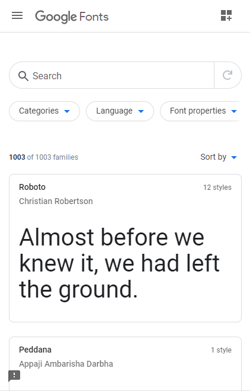

Alignment
GitHub
The six logos beneath the GitHub blerb are aligned nicely in pairs, both vertically and horizontally. A good, simple, well-organized section of the design.
Alignment is probably one of the most important parts of design principles. You can use alignment to do nearly all of the other ideas/concepts. If you know how to use the alignment techniques properly, it will make your page look more appealing. Alignment is one of the most imprtant design principles, so I was very glad to see it on the GitHub site of all things. The concept of alignment bleeds over into many of the other conceps as well, so if you know how to use alignment techniques correctly, we can make our pages look MUCH more appealing.
Rule of Thirds
Brigham Young University - Idaho
The image in the middle of the above screenshot follows the "Rule of Thirds" concept. That is to say, the focal point (the woman's face) is in the middle, with the word "READY" (another focal point) written in a bold, high-contrast font on the right, while another piece of text is located over on the left.
When images and text are aligned in this way, it becomes easier to understand the focus of the main image and read the text, hence why these three elements are each used on this page.
Clean Design
Google Fonts API
Google Fonts API makes a good example of white-space, giving it a very clean design. The spacing around all the objects allows people who are viewing the page to feel calm and relaxed calm as they search for a font they like.
The clean design is mostly due to the use of boxes separating the content (the fonts and their example texts) with a good spacing between them. All in all, the design is simple and eloquent, and a very good example for spacing.